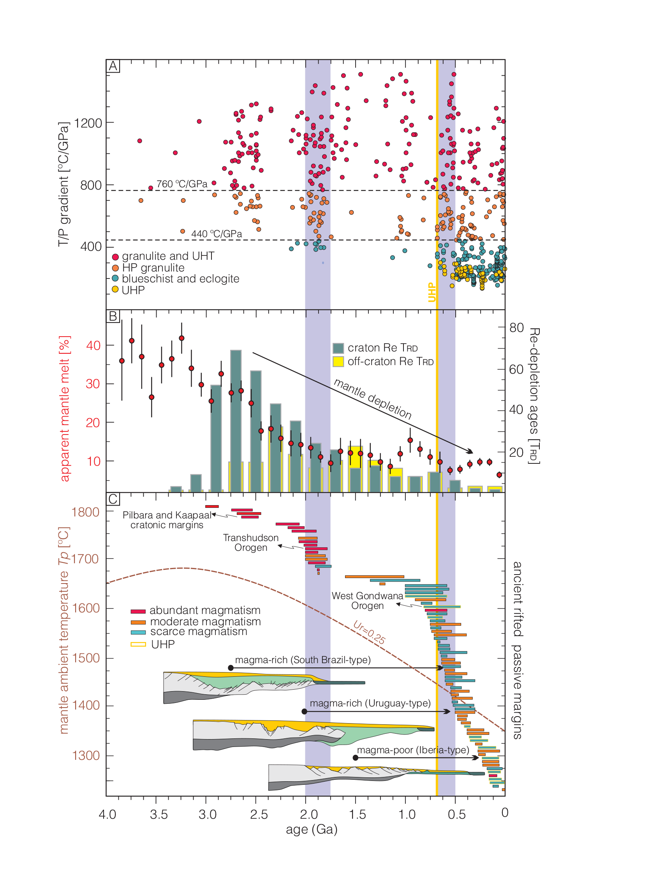

Emergence of modern-style continental subduction modulated by rifted margin-subduction feedback

Resumo em Português
A subducção continental de estilo moderno é o principal mecanismo de transporte de margens rifteadas a profundidades mantélicas (>90 km), onde o metamorfismo de ultra-alta pressão (UAP) acima da estabilidade do coesite é atingido. Uma questão em aberto é por que rochas UAP exumadas — uma característica-chave dos orógenos continentais de estilo moderno — apenas surgiram e tornaram-se comuns tardiamente na história da Terra. A explicação tradicional baseia-se no gradiente geotérmico mais elevado da Terra antiga, que ou impediria a subducção continental de atingir condições UAP ou impediria sua exumação.Por meio de experimentos numéricos termomecânicos de alta resolução, demonstramos que segmentos de margens rifteadas pobres em magma que atingem condições UAP podem ser exumados de volta a níveis mais rasos, enquanto segmentos de margens rifteadas ricas em magma não podem. Isso ocorre porque a espessa camada de rochas basálticas nas margens ricas em magma torna-se negativamente flutuante durante o metamorfismo, impedindo sua exumação. Argumenta-se ainda que a diminuição secular tanto da temperatura potencial do manto quanto de sua fertilidade teria favorecido a formação de margens rifteadas ricas em magma na primeira metade da história da Terra, afetando a reciclagem e exumação de margens profundamente subductadas. O registro indica que as condições para o desenvolvimento de margens rifteadas pobres em magma podem ter se tornado possíveis durante a idade média da Terra (1,5–0,8 Ga), quando um manto mais frio e refratário limitou a fusão e o magmatismo. Quando essas margens atingiram zonas de colisão no Neoproterozoico, sua flutuabilidade positiva forçou a exumação das rochas UAP mais antigas inequivocamente portadoras de coesite em ~0,6 Ga. Desde então, as rochas UAP tornaram-se uma característica fundamental e ubíqua dos orógenos continentais de estilo moderno.